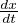
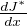
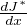

Abstract
We can reach to a stable point from a unstable point given the system is controllable ,
but the thing is that we have never tought about the constrained in inout u.
we have never said the power given to the actuators should be in some limit .
while experimenting I have found the cases where I have got values of gain matrix upto 100 or 200.In this section I have explored the world of optimization , that is for example go to a point “A” from point “B” by consuming least fuel!.
In this part I will try to give simple example about different controllers on simpler different physical system and then at last will try to implement those ideas on our classical inverted pendulum model.
We control a linear system having some constraint which is described by a quardratic cost.
Our goal will be to reach a sable state from a unstable state through those other states which give minimum cost .This quardatic cost takes into two types of account the cost of being in that state and the cost of “giving the controller a Input command”.
Consider now the optimal control problem: minu(.) ∫ 0Tg(x,u)dt
where g(x,u) is one step cost from state x to xn+1 having an input u
subject to the constraint  = f(x,u), x ∈ Rn ,u ∈ Rm. Abstractly, this is a constrained optimization problem where we seek a feasible trajectory (x(t),u(t)) that minimizes the cost function J(x,u) = ∫ 0Tg(x,u)dt
INFINITE HORIZON OPTIMAL CONTROL:
If we let T=infinite then we seek to optimize a cost function over all time.This is called infinite horizon optimal control problem.
If infinite horizon problem has a solution with finite cost then the integral cost term L(x,u)must approach to zero as t→ infinite.
We choose the cost function as xTQx + uTRu
In this formulation, Q ≥ 0 penalizes state error, R > 0 penalizes the input control signals.
The necessary and sufficient condition for optimality is to satisfy Hamilton-Jacobi-Bellman equation.
Hamilton-Jacobi-Bellman equation:
0=minu[g(x,u) + f(x,u)]
which says that if you have a control policy u and optimal cost to go function( sum of one step cost )to prove that it is a optimal control policy then it should statisfy the following equation:
0=[g(x,u*) + f(x,u*)]
The optimal policy we find from HJB equation
u* = -R-1BTSx =-k*x
S is the solution of algebric Riccati equation
0 = SA + ATS - SBR-1BTS + Q
>In matlab we have a direct command
K=LQR(A,B,Q,R) to find the gain matrix.